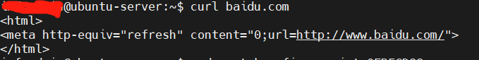
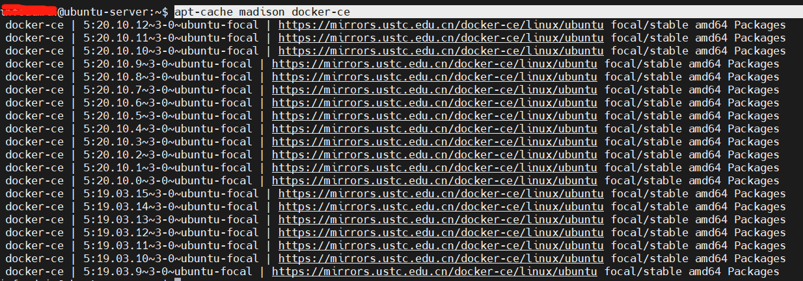
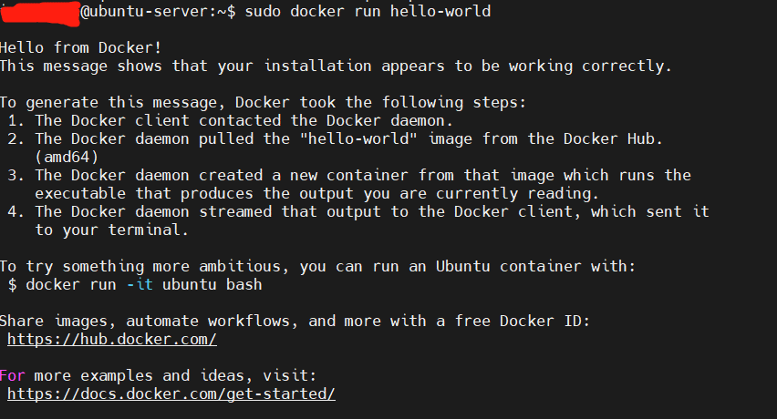

需求与前提
- 客户提供一台安装ubuntu系统的虚拟机，要求我们安装我们的软件，在现在这个docker“横行”的时代，我们当然是用docker-compose来安装所有环境和软件；
- 可联网
- 由于系统权限问题，基本命令都需要sudo运行
前置操作
确认ubuntu系统版本
1
uname -a
查看是否可以联网，发现可以，心定下一半，要在封闭网络下安装软件就比较麻烦了，此篇不做详述
1
2ping www.baidu.com
curl www.baidu.com
安装docker
由于客户提供我们的是一台刚初始化的系统，所以不牵涉到有老版本删除的问题，此命令未验证
1
sudo apt-get remove docker docker-engine docker.io containerd runc
一键安装，两条命令任选其一即可，未验证
1
2curl -fsSL https://get.docker.com | bash -s docker --mirror Aliyun
curl -sSL https://get.daocloud.io/docker | sh
1. 更新 apt 包索引
1 | sudo apt-get update |
2. 安装 apt 依赖包，用于通过HTTPS来获取仓库
1 | sudo apt-get install \ |
3. 添加 Docker 的官方 GPG 密钥
1 | curl -fsSL https://mirrors.ustc.edu.cn/docker-ce/linux/ubuntu/gpg | sudo apt-key add - |
4. 通过搜索指纹的后8个字符，验证您现在是否拥有带有指纹的密钥
1 | sudo apt-key fingerprint 0EBFCD88 |
- 输出
1
2
3
4pub rsa4096 2017-02-22 [SCEA]
9DC8 5822 9FC7 DD38 854A E2D8 8D81 803C 0EBF CD88
uid [ unknown] Docker Release (CE deb) <docker@docker.com>
sub rsa4096 2017-02-22 [S]
5. 使用以下指令设置稳定版仓库
1 | sudo add-apt-repository \ |
6. 再次更新 apt 包索引
1 | sudo apt-get update |
7. 安装 Docker Engine-Community 和 containerd
- 没有特殊要求的可以直接安装最新版本
1
sudo apt-get install docker-ce docker-ce-cli containerd.io
安装指定版本
查询版本
1
apt-cache madison docker-ce

安装指定版本
1
sudo apt-get install docker-ce=<VERSION_STRING> docker-ce-cli=<VERSION_STRING> containerd.io
8. 确认安装成功
1 | sudo docker --version |

安装docker-compose
1. 使用daocloud下载，据说下载比较快
1 | sudo curl -L https://get.daocloud.io/docker/compose/releases/download/1.22.0/docker-compose-`uname -s`-`uname -m` -o /usr/local/bin/docker-compose |
2. 设置权限
1 | sudo chmod +x /usr/local/bin/docker-compose |
3.确认安装成功
1 | sudo docker-compose --version |
去除sudo
- 然后打所有docker或者docker-compose命令时都需要带着sudo，很烦
- 通过将用户添加到docker用户组可以将sudo去掉
1. 添加docker用户组
1 | sudo groupadd docker |
2. 将登陆用户加入到docker用户组中
1 | sudo gpasswd -a $USER docker |
3. 更新用户组
1 | newgrp docker |
4. 确认成功，再打docker和docker-compose相关命令都不需要带sudo了
1 | docker ps |
遇到的坑，启动docker-compose拉取镜像（mongodb，redis等）时报错
错误一：ERROR: Couldn’t connect to Docker daemon at http+docker://localhost - is it running?
- 网上找了个解决方案，说是主要原因是docker不是系统服务方式启动，尝试了以下命令，并未解决问题
1
2
3service docker start //启动docker服务
systemctl enable docker.service //生成自启动服务
systemctl status docker.service //systemctl status docker.service
错误二：error pulling image configuration
docker-compose拉去镜像时报超时的错，使用国外源太慢了，修改为国内源会快很多。
- 备份/etc/apt/sources.list
1
cp /etc/apt/sources.list /etc/apt/sources.list.bak
- 备份/etc/apt/sources.list
- 在/etc/apt/sources.list文件前面添加如下条目
1
2
3
4
5
6
7
8
9
10
11#添加阿里源
deb http://mirrors.aliyun.com/ubuntu/ bionic main restricted universe multiverse
deb http://mirrors.aliyun.com/ubuntu/ bionic-security main restricted universe multiverse
deb http://mirrors.aliyun.com/ubuntu/ bionic-updates main restricted universe multiverse
deb http://mirrors.aliyun.com/ubuntu/ bionic-proposed main restricted universe multiverse
deb http://mirrors.aliyun.com/ubuntu/ bionic-backports main restricted universe multiverse
deb-src http://mirrors.aliyun.com/ubuntu/ bionic main restricted universe multiverse
deb-src http://mirrors.aliyun.com/ubuntu/ bionic-security main restricted universe multiverse
deb-src http://mirrors.aliyun.com/ubuntu/ bionic-updates main restricted universe multiverse
deb-src http://mirrors.aliyun.com/ubuntu/ bionic-proposed main restricted universe multiverse
deb-src http://mirrors.aliyun.com/ubuntu/ bionic-backports main restricted universe multiverse
- 在/etc/apt/sources.list文件前面添加如下条目
- 更新
1
2sudo apt-get update
sudo apt-get upgrade
- 更新
我加了阿里的源已经解决问题，还有一些其他源待选，未验证
中科大源
1
2
3
4
5
6
7
8
9
10deb https://mirrors.ustc.edu.cn/ubuntu/ bionic main restricted universe multiverse
deb-src https://mirrors.ustc.edu.cn/ubuntu/ bionic main restricted universe multiverse
deb https://mirrors.ustc.edu.cn/ubuntu/ bionic-updates main restricted universe multiverse
deb-src https://mirrors.ustc.edu.cn/ubuntu/ bionic-updates main restricted universe multiverse
deb https://mirrors.ustc.edu.cn/ubuntu/ bionic-backports main restricted universe multiverse
deb-src https://mirrors.ustc.edu.cn/ubuntu/ bionic-backports main restricted universe multiverse
deb https://mirrors.ustc.edu.cn/ubuntu/ bionic-security main restricted universe multiverse
deb-src https://mirrors.ustc.edu.cn/ubuntu/ bionic-security main restricted universe multiverse
deb https://mirrors.ustc.edu.cn/ubuntu/ bionic-proposed main restricted universe multiverse
deb-src https://mirrors.ustc.edu.cn/ubuntu/ bionic-proposed main restricted universe multiverse163源
1
2
3
4
5
6
7
8
9
10deb http://mirrors.163.com/ubuntu/ bionic main restricted universe multiverse
deb http://mirrors.163.com/ubuntu/ bionic-security main restricted universe multiverse
deb http://mirrors.163.com/ubuntu/ bionic-updates main restricted universe multiverse
deb http://mirrors.163.com/ubuntu/ bionic-proposed main restricted universe multiverse
deb http://mirrors.163.com/ubuntu/ bionic-backports main restricted universe multiverse
deb-src http://mirrors.163.com/ubuntu/ bionic main restricted universe multiverse
deb-src http://mirrors.163.com/ubuntu/ bionic-security main restricted universe multiverse
deb-src http://mirrors.163.com/ubuntu/ bionic-updates main restricted universe multiverse
deb-src http://mirrors.163.com/ubuntu/ bionic-proposed main restricted universe multiverse
deb-src http://mirrors.163.com/ubuntu/ bionic-backports main restricted universe multiverse清华源
1
2
3
4
5
6
7
8
9
10deb https://mirrors.tuna.tsinghua.edu.cn/ubuntu/ bionic main restricted universe multiverse
deb-src https://mirrors.tuna.tsinghua.edu.cn/ubuntu/ bionic main restricted universe multiverse
deb https://mirrors.tuna.tsinghua.edu.cn/ubuntu/ bionic-updates main restricted universe multiverse
deb-src https://mirrors.tuna.tsinghua.edu.cn/ubuntu/ bionic-updates main restricted universe multiverse
deb https://mirrors.tuna.tsinghua.edu.cn/ubuntu/ bionic-backports main restricted universe multiverse
deb-src https://mirrors.tuna.tsinghua.edu.cn/ubuntu/ bionic-backports main restricted universe multiverse
deb https://mirrors.tuna.tsinghua.edu.cn/ubuntu/ bionic-security main restricted universe multiverse
deb-src https://mirrors.tuna.tsinghua.edu.cn/ubuntu/ bionic-security main restricted universe multiverse
deb https://mirrors.tuna.tsinghua.edu.cn/ubuntu/ bionic-proposed main restricted universe multiverse
deb-src https://mirrors.tuna.tsinghua.edu.cn/ubuntu/ bionic-proposed main restricted universe multiverse
参考：Ubuntu Docker 安装
参考：Ubuntu下安装docker和docker-compose
参考：Ubuntu 18.04修改默认源为国内源